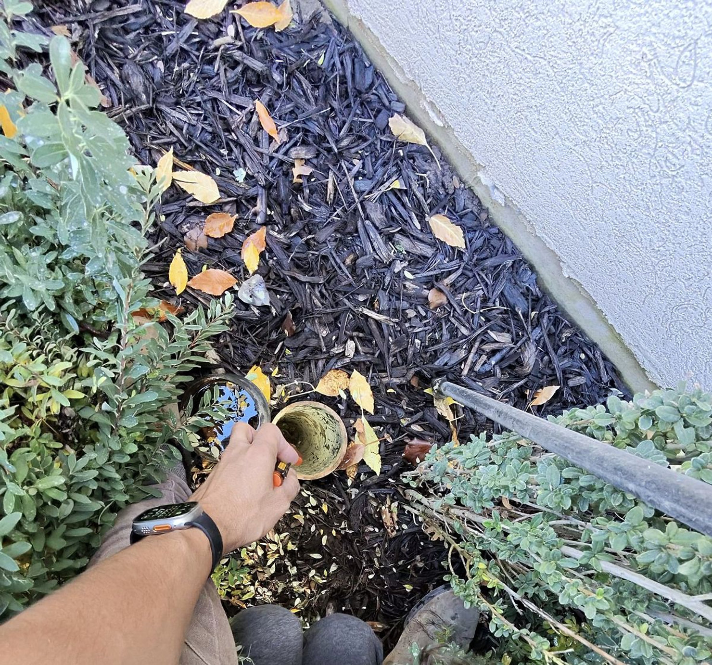
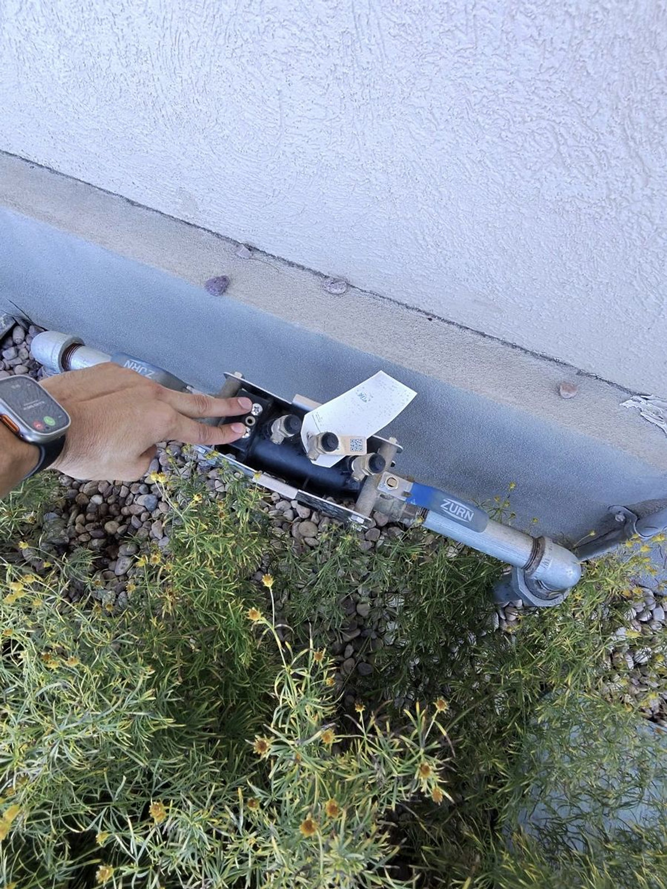

How to Winterize Sprinklers in Utah County (Step by Step)
Fall in Utah County is beautiful, but water left sitting in your sprinkler system when the first hard freeze arrives can crack pipes, valves, and your backflow preventer. You usually won't find the damage until spring.
The good news: winterizing a residential sprinkler system is a simple process once you know your parts. This guide covers two approaches: a basic method that drains the most exposed parts, and the standard method that also blows the remaining water out of every zone with compressed air.
Why Sprinkler Winterization Matters
Water expands as it freezes. Inside a pipe, valve, or sprinkler head, that expansion can split the part open. The parts most at risk are:
The backflow preventer, which sits above ground and is fully exposed to cold air
Valves and manifolds in the valve box
Lateral lines running out to each zone
Sprinkler heads and drip parts near the surface
When to Winterize
Winterize after you no longer need to water but before the first hard freeze. Signs it's time:
Your lawn has slowed down and doesn't need regular watering
Nighttime temperatures are dropping toward freezing, below 32°F; I'd winterize before then, when the low is around 35°F
Your city or secondary (pressurized irrigation) water provider has announced its fall shutoff date, usually around October 15th.
Know the Parts Before You Start
Stop and waste valve: The main shutoff for your irrigation water, usually buried in a small curb box or pipe near the property line, the water meter, or by the backflow preventer. When closed, it also opens a small drain port to let water drain out of the pipe, emptying the residual sprinkler water at its lowest point. You turn it with a long stop-and-waste key.
Backflow preventer: The above-ground device (often near the house) that keeps irrigation water from flowing back into your drinking water. It has ball valves on each side and small test cocks (check valve ports) on the body that you open with a flat screwdriver. Or you can simply remove the whole backflow and store it in your garage.
Controller (timer): The clock that runs your zones.
How to Winterize Sprinklers: Step by Step
Before Either Method: Set the Controller to Off or Rain Mode
Switch your timer to "off" or "rain" so it doesn't try to run zones all winter. Most controllers keep your programming in this mode.
Basic Method: Shut Off, Drain, and Remove the Backflow
The basic method protects the most vulnerable, above-ground part of the system. It does not clear all of the water out of the buried lines. Modern systems have “king drains” at all low points, which automatically drain pipes when the system is shut off and there is no longer pressure in the lines.
Step 1: Close the Stop and Waste Valve
Find your stop and waste valve in its curb box. Put the stop-and-waste key down the pipe, seat it on the valve, and turn it to the closed position (usually a quarter turn). This shuts off the supply to the sprinkler system.

Step 2: Open the Test Cocks on the Backflow Preventer
Use a flat screwdriver to turn each test cock (the small check valve ports on the backflow body) a quarter turn to open it. This releases pressure and lets water drain out of the device and the line. Expect a short burst of water and air. (The most effective preventive measure is Step 3.)

Step 3: Remove the Backflow Preventer
Once pressure is released, unscrew and remove the wedge of the backflow preventer and lift the body out. Store it indoors somewhere it won't freeze. Leave the remaining ball valves partly open (about halfway) so any trapped water has room to expand instead of cracking the valve.

Standard Method: Drain, Remove the Backflow, and Blow Out the Lines
The standard method adds a compressed-air blowout, which pushes the leftover water out of the valves, lines, and heads in every zone. This is the most thorough way to protect a Utah County sprinkler system.
Step 1: Close the Stop and Waste Valve
Same as the basic method: use the stop-and-waste key to close the valve in the curb box.
Step 2: Open the Backflow Preventer's Test Cocks
Open the test cocks with a flat screwdriver to release pressure and let the water in the lines drain out.
Step 3: Remove the Backflow Preventer
Remove the backflow body and store it indoors. Close the outlet valve to prevent return air when blowing out lines.
Step 4: Blow Out the System with an Air Compressor (Never Over 80 PSI)
Connect the compressor hose to the system's blowout fitting, or a hose spigot that's connected to the sprinkler lines (NOT the spigot on the house), downstream of where the backflow preventer was.
Set the compressor regulator so pressure never goes above 80 psi. Many systems clear well at lower pressure.
Turn on one zone at the controller (or manually at its valve).
Let air push the water out through the heads until only a fine mist comes out, then switch to the next zone.
Work through every zone, including drip zones. Don't keep blowing air through a zone that's already dry, because friction can heat and damage plastic parts.
When you're done, shut off the compressor and let the pressure bleed off before you disconnect the hose. Then open the valve you closed at the backflow. Leave the hose spigots open.
Sprinkler Blowout Safety Cautions
Keep pressure at or under 80 psi. Too much pressure can burst pipes, fittings, and heads.
Wear eye protection. Air, water, and debris can shoot out of heads and fittings at high speed.
Never stand over sprinkler heads or open fittings while air is flowing.
Never leave a running compressor unattended, and release pressure before you disconnect hoses.
Never blow air through the backflow preventer. Remove it first and connect downstream.
Common Sprinkler Winterization Mistakes
Waiting too long. An early cold snap can freeze water in the backflow preventer before you get to it.
Leaving the backflow preventer full and pressurized. This is one of the most common causes of spring leaks.
Forgetting to fully close the stop and waste valve. Water keeps feeding the system.
Using too much air pressure. Going over 80 psi risks cracked fittings and blown heads.
Using an undersized compressor. Small shop compressors often can't move enough air to clear a zone.
Skipping zones or drip lines. Every zone needs to be cleared.
Forgetting the controller. A timer that keeps cycling can open valves on an empty system.
Frequently Asked Questions
When should I winterize my sprinklers in Utah County?
After you've stopped watering for the season and before the first hard freeze. Check your city or secondary water provider's shutoff date and plan around it.
Is a sprinkler blowout necessary?
The basic method protects the backflow preventer, but water stays in the buried lines and heads. A blowout clears the whole system, which is why it's the standard method in Utah County.
Can I winterize my sprinklers myself?
Yes, if you can find your stop and waste valve and backflow preventer and you have a compressor you can regulate to 80 psi or less. The main risks are too much pressure, leftover water, and injury from compressed air.
What air pressure should I use for a blowout?
Never more than 80 psi. Use the lowest pressure that clears each zone to a fine mist.
Do I need to remove the backflow preventer?
Removing it and storing it indoors is the surest way to keep it from cracking. It also keeps you from blowing air through it.
What if it froze before I winterized?
Winterize as soon as you can, then watch for leaks, soggy spots, or broken heads when you start the system in spring.
Do drip systems need to be winterized?
Yes. Drip lines, filters, and pressure regulators hold water and can crack, so clear them along with the rest of the system.
Wrapping Up
A little time this fall helps your sprinkler system come back strong in spring. Questions? Reach out anytime.
Recent Posts

If you live in Lehi, there's a good chance your yard isn't perfectly flat. Newer neighborhoods near Traverse Mountain, homes along the foothills, and lots that step down toward the street all share th